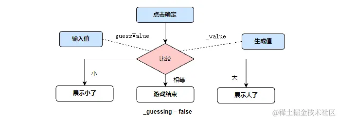
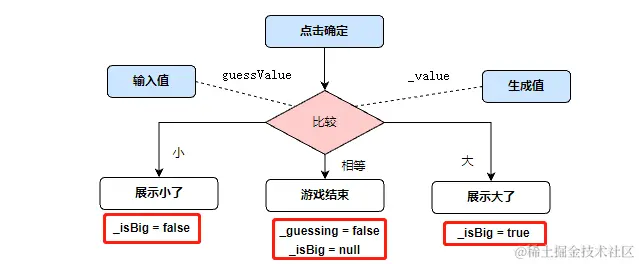
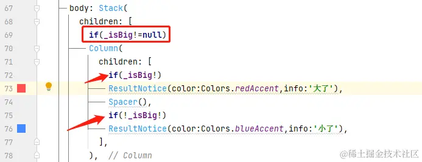

- 01 前言-教程内容导读.md.html
- 02 Flutter 开发环境的搭建.md.html
- 03 新手村基础 Dart 语法 (上).md.html
- 04 新手村基础 Dart 语法 (下).md.html
- 05 Flutter 计数器项目解读.md.html
- 06 猜数字界面交互与需求分析.md.html
- 07 使用组件构建静态界面.md.html
- 08 状态数据与界面更新.md.html
- 09 校验结果与提示信息.md.html
- 10 动画使用与状态周期.md.html
- 11 猜数字整理与总结.md.html
- 12 电子木鱼界面交互与需求分析.md.html
- 13 电子木鱼静态界面构建.md.html
- 14 计数变化与音效播放.md.html
- 15 弹出选项与切换状态.md.html
- 16 用滑动列表展示记录.md.html
- 17 电子木鱼整理与总结.md.html
- 18 白板绘制界面交互与需求分析.md.html
- 19 认识自定义绘制组件.md.html
- 20 通过手势在白板上绘制.md.html
- 21 白板画笔的参数设置.md.html
- 22 撤销功能与画板优化.md.html
- 23 应用界面整合.md.html
- 24 数据的持久化存储.md.html
- 25 网络数据的访问.md.html
- 26 教程总结与展望.md.html
- 捐赠
09 校验结果与提示信息
1. 需求中的状态数据分析
在上一篇中，已经准备好了数据和界面。本篇将介绍比较结果的校验，以及展示用户输入值和随机目标值的大小信息。点击确定时，可能的结果有 3 中，如下所示：

如下所示，是点击确定时不同情况下期望的界面效果；也就是说，界面的展现需要随着用户交互而变化。所以在当前需求之下，需要引入新的状态数据，用于控制界面的表现。
| 大了 | 小了 | 相等 |
|---|---|---|
这个状态数据将用于表示校验结果，该用什么类型呢？首先要明确一点：比较结果有三种情况: 大了、小了、相等 。其实只要某种数据类型包含三个值，都可以用于表示校验状态，只要逻辑正确即可，比如:
int 型:
0: 大了
1: 小了
2: 相等
String 型:
'big': 大了
'small': 小了
'equal': 相等
但如果用 int 或 String 表示，首先必须提前做出规定。而对于不了解规定的人，在阅读时会增加理解的难度。如果这种类似的规定场景在一个项目里经常出现，就是一个个雷点，迟早会爆炸。其实 bool 类型的出现，就是为了避免用 0 和 1 整数来表示真假，带来语义上的难以理解。
能且仅能是一种语法上的约束，可以在根源上杜绝一些可能发生的错误。那问一个问题，什么类型有且仅有 3 个值？很多人会说 枚举，这确实可以，不过稍显麻烦。这里想用 bool?来表示三态，它有如下三个值：
null: 相等
true: 大了
false: 小了
分析完后，现在 _GuessPageState 里定义为变量 _isBig 作为状态数据，控制校验结果。默认为 null ：
bool? _isBig;
2. 校验逻辑与状态数据的维护
校验逻辑算是比较简单的，对状态数据的维护可以称之为 业务逻辑，校验逻辑将在 _onCheck 回调中进行。上篇说过，这里可以得到目标值和输入值，输入值可以通过 int.tryParse 吧字符串转为整型。
有些小细节要注意一下：如果 _guessing 为 false ，表示游戏未开始；或输入的不是整数，此时应该不做响应，直接返回即可。
void _onCheck() {
print("=====Check:目标数值:$_value=====${_guessCtrl.text}============");
int? guessValue = int.tryParse(_guessCtrl.text);
// 游戏未开始，或者输入非整数，无视
if (!_guessing || guessValue == null) return;
//猜对了
if (guessValue == _value) {
setState(() {
_isBig = null;
_guessing = false;
});
return;
}
// 猜错了
setState(() {
_isBig = guessValue > _value;
});
}
如果猜对了，表示游戏结束，将 _guessing 置为 true、_isBig 置为 null ; 如果猜错了，通过 guessValue 和 _value 的比较结果，为 _isBig 赋值。这就是对状态数据的维护过程。

3. 状态数据与界面构建逻辑
状态数据以及维护完毕，下面来看一下最后一步：使用 _isBig 状态控制界面的呈现。从最终效果，可以推断出_isBig 对界面的功效：
| 大了 | 小了 | 相等 |
|---|---|---|
- 背景的色框提示，只有在大了或小了时才会出现，也就是说当
_isBig != null时才会出现，对应下面代码的69 行。 - 大了和小了是互斥的，不会同时出现，通过
Spacer进行占位，大了时占下半；小了时占上半。

注:
isBig!是空安全的语法，如果一个可空对象 100% 确定非 null。可以通过对象名!表示 非空对象。 由于上面if(_isBig)才会走下方逻辑，所以使用处 100% 非空。
4.本章小结
到这里，猜数字简单版本就已经完成了。当前代码提交位置: guess_page.dart 你可以随机生成数字，在输入框中猜测数字，并校验猜测的值，给出提示。虽然是个小案例，但相比于计数器来说复杂了一些，额外维护了几个状态数据，界面布局上也更加复杂。是一个初学者进一步了解 Flutter 的好案例，把它吃透，会对你受益匪浅。
虽然现在可以完成猜数字需求，但是还有一点缺陷。比如当校验 小了， 下次校验还小时，由于 _isBig 的状态类没变，提示界面就没有任何变化(下左图)。如果用户的一个操作得不到反馈，体感上会觉得可能没点好；此时给予用户视觉上的反馈就会有比较好的体验，比如加一个动画效果(下左图)：
| 无动画 | 有动画 |
|---|---|
© 2019 - 2023 Liangliang Lee. Powered by gin and hexo-theme-book.